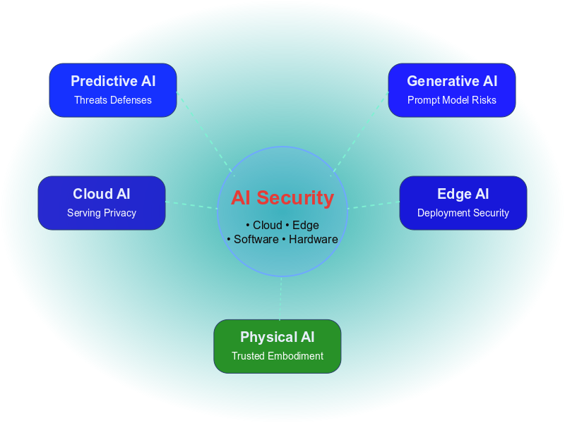
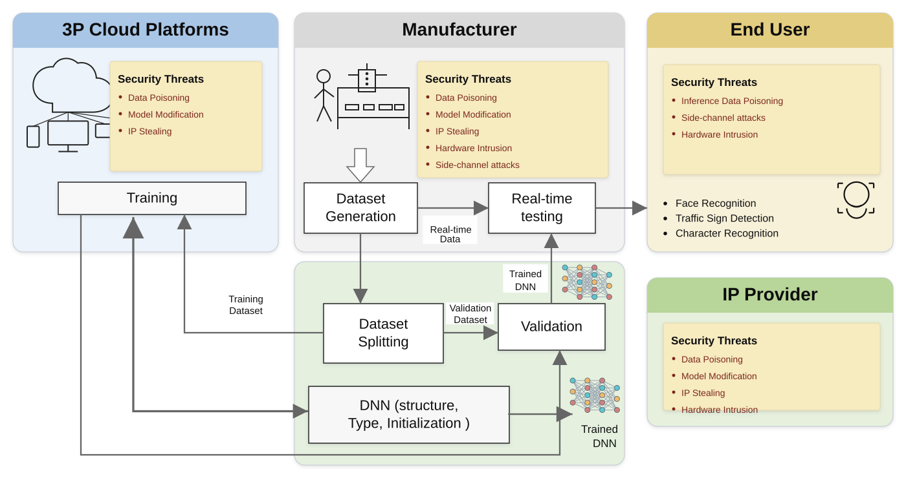

Trustworthy AI: Models to Physical Intelligence
This website presents a research-focused view of AI security across software, hardware, deployment stacks, and emerging intelligent systems including predictive, generative, agentic, edge, and physical AI.

AI Security Landscape
A compact cross-layer map of software threats, hardware risks, deployment realities, and the emerging security challenges in predictive, generative, agentic, edge, and physical AI.

This diagram gives a high-level technical overview of how modern AI security spans model-level vulnerabilities, hardware implementation risks, deployment settings, and system-level countermeasure design.
Selected focus areas with technical context
These highlighted themes provide a fast visual entry point into major directions shaping current AI security research.


Foundational security directions
These categories anchor the broader research map and connect model-level threats with implementation-aware analysis.

End-to-end threat landscape across the AI pipeline, from training and dataset generation to validation and real-time deployment.
Security categories covered on this website
These pages are written to be readable for students and collaborators while remaining technical enough for researchers and engineers.

Predictive AI Security
Classifiers, detectors, ranking systems, forecasting models, and their attack and defense landscape.
Agentic AI Security
Autonomous planning loops, tools, memory, permissions, orchestration, and operational containment.
Countermeasures
Cross-layer defenses spanning robust learning, runtime monitoring, hardware hardening, and co-design.
Cloud AI Security
Shared infrastructure, API exposure, privacy, access control, and secure serving.
Edge AI Security
Physical exposure, constrained devices, accelerator implementations, and deployment realism.
Full Research Map
Browse all sections and use the website as a compact technical survey hub.
Highlighted ongoing directions
These short research-watch notes capture themes I am actively tracking beyond the static section pages: emerging attack surfaces, new defense directions, and system-level gaps becoming important in real AI deployment.
Research, resources, and ongoing technical directions
Use this portal to navigate core AI security themes, browse focused resources, and follow ongoing research notes across software, hardware, edge, and physical AI.